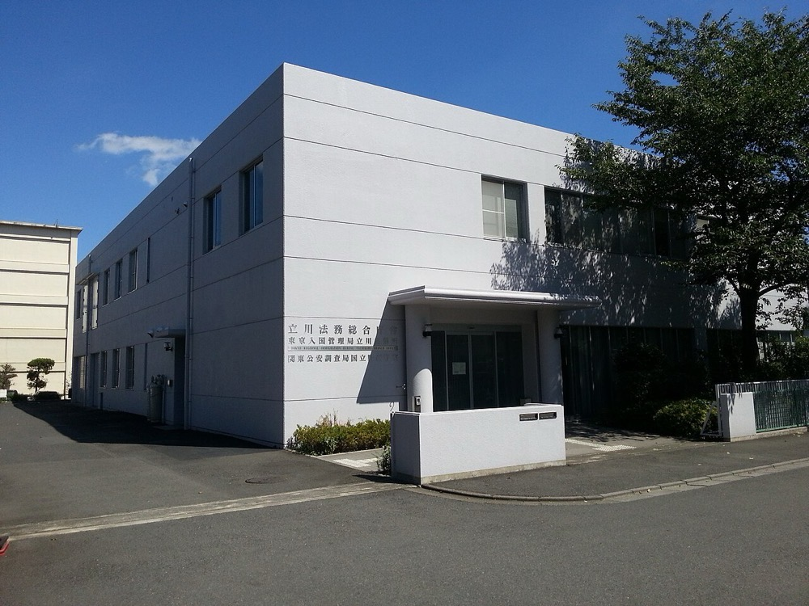

ベトナム・インドネシア・ミャンマーなどの送出機関と提携し、特定技能の外国人材を介護・製造・外食・建設などの企業に紹介する。入社時に紹介料を受け取り、入社後は登録支援機関として生活と就労の支援を月額で受託する。営業先は外国人材を継続して採用する中堅・大企業の人事部門である。
特定技能の在留者数は2025年末に39万296人で、前年比37.2%増である。在留外国人の総数は412万5,395人である1。外国人労働者数は2025年10月末に257万1,037人で、前年比11.7%増である2。

2026年1月23日の閣議決定で、2027年4月から2年間の育成就労の受入れ枠は43万人とされた。特定技能と合わせた上限は123万人である3。2025年12月の政府素案では特定技能を約80万人としていた11。
本案の売上は、紹介料と登録支援機関の月額支援費である。月額支援費の業界の平均は1人28,386円とされる5。この数値は出入国在留管理庁の令和4年度の調査として事業者が引用したもので、本ページでは原資料を確認できなかった。
推計 2025年
月額支援費 ＝ 39万296人 × 委託率80% × 28,386円 × 12か月 ≒ 1,063億円
紹介料 ＝ 年間の新規就労15万人 × 1人30万円 ＝ 450億円
合計 約1,510億円。委託率80%、新規就労15万人、紹介料30万円は本ページの仮定値である。在留者数の純増は約10.6万人で1、離職と転職による入れ替わりを加えて15万人とした。
推計 2029年 特定技能が80万人に達する場合、月額支援費は 80万人 × 0.8 × 28,386円 × 12 ≒ 2,180億円となる。紹介料を年20万人 × 30万円 ＝ 600億円とすると、合計は約2,780億円である。
育成就労の受入れと支援は監理支援機関が行う。技能実習の監理団体は非営利法人に限られており、監理支援機関も同様の見込みである。本ページでは制度の詳細を確認しておらず、育成就労の監理の費用は上の推計に含めていない。
本ページでは、世界の外国人労働者の紹介市場の規模を一次情報で確認できなかった。韓国と台湾も東南アジアから労働者を受け入れており、送出国では日本と受入れ人材を競合している。
| 年 | 変化 | 数値 |
|---|---|---|
| 2022年7月 | 技能実習生の来日前の費用の調査 | 送出機関などへの支払いの平均は54万2,311円、ベトナムは65万6,014円。母国で借金をしている実習生は約55%6 |
| 2025年末 | 特定技能の在留者数 | 39万296人、前年比37.2%増1 |
| 2025年10月末 | 外国人労働者数 | 257万1,037人、届出の義務化以降で最多2 |
| 2026年1月23日 | 育成就労の運用方針の閣議決定 | 2年間で43万人、特定技能と合わせ最大123万人。対象は17分野3 |
| 2026年4月 | 外食業分野の特定技能 | 受入れ見込数に達し、在留資格認定証明書の交付が停止された4 |
| 2027年4月1日 | 育成就労の施行と登録支援機関の要件の厳格化 | 技能実習が育成就労に移る。登録支援機関の登録要件も厳しくなる3 7 |
受入れの総量は2027年から2年間で最大123万人に設定された3。2025年末の特定技能39万人1から見ると、紹介と支援の需要は数年で約2倍になる。一方、外食業のように受入れ見込数に達した分野は新規の受入れが止まる4。登録支援機関の要件が2027年4月に厳しくなると、小規模な機関の一部は登録を更新できない7。顧客企業が委託先を変える時期は2027年前後に集中する。
| 種類 | 事業者 | 動き |
|---|---|---|
| 登録支援機関 | 行政書士法人、人材会社、技能実習の監理団体など | 月額の支援費は1人1.5〜3万円の定額が多い8。登録件数の最新値は本ページで確認できなかった |
| 人材紹介の大手 | 上場の人材会社各社 | 外国人材の紹介を事業の一部として行う。外国人材の事業単独の売上は確認していない |
| 生活支援の事業者 | 外国人向けの家賃保証と生活支援の会社 | 就労支援と生活支援を一括で提供する。案31で扱う |
上位事業者の売上とシェアは、本ページでは確認できなかった。登録支援機関は行政書士事務所や小規模な人材会社が多く、分散した市場と考えられる。
首位の条件 分散した市場では、管理する人数で1位になれば売上でも1位に近づく。条件は3つである。①送出国で候補者を集め、日本語と技能の試験の合格まで育成する仕組みを自社で持つこと。②入社後の離職率を下げ、紹介の後に月額支援費を長く受け取ること。③2027年4月の要件の厳格化に先行して体制を整え、更新できない機関の顧客企業を引き受けること。
分野は介護と飲食料品製造業に絞る。2025年に在留者数の増加が大きい分野であり4、外食業のような受入れの停止が起きていないためである。送出国はベトナムとインドネシアから始める。
| 用途 | 金額 | 検証すること |
|---|---|---|
| 多言語の支援担当3名と営業1名 12か月 | 2,000万円 | 支援担当1名で何人を管理できるか |
| 送出機関との提携と現地での面接 | 500万円 | 候補者の試験合格率と、送出機関の手数料の水準 |
| 来日前の日本語教育の費用負担 | 300万円 | 入社後1年の定着率 |
| 有料職業紹介の許可、登録支援機関の登録、行政書士費用 | 200万円 | 許可と登録の取得期間 |
| 管理のシステム | 200万円 | 面談記録と届出の自動化の範囲 |
| 運転資金 | 800万円 | 紹介料の入金までの期間 |
| 合計 | 4,000万円 |
| 月 | 計画 |
|---|---|
| 1〜3月目 | 有料職業紹介の許可と登録支援機関の登録を申請する。送出機関をベトナムとインドネシアで各2機関選ぶ。借金を前提とした手数料を求めない機関に限る |
| 4〜6月目 | 介護と食品製造の企業10社と紹介の契約を締結する。現地で候補者の面接を行う |
| 7〜12月目 | 150人を紹介し、200人の月額支援を受託する。他の登録支援機関から委託先の変更を受け付ける |
1年目の判定基準は、紹介した人材の入社後6か月の定着率が90%以上で、支援担当1名当たりの管理人数が60人以上であることである。
| 段階 | 資金 | 金融機関 | 条件 |
|---|---|---|---|
| 創業時 | 新規開業の融資 | 日本政策金融公庫 国民生活事業 | 限度7,200万円9。運転資金として3,000万円を借りる |
| 1〜3年目 | 紹介料と月額支援費 | 顧客企業 | 紹介料は入社時に一括で受け取る。月額支援費は前月末に請求する |
| 3〜5年目 | 当座貸越、資本性劣後ローン | 地銀、日本政策金融公庫 中小企業事業 | 月額支援費の契約残高を返済能力の根拠に示す。資本性ローンの限度は15億円10 |
| 5年目以降 | 買収融資 | 地銀、メガバンク | 登録支援機関、日本語学校、送出国の送出機関を買収する |
| 年目 | 1 | 2 | 3 | 5 | 7 | 10 |
|---|---|---|---|---|---|---|
| 月額支援の管理人数 | 200 | 700 | 2,000 | 15,000 | 40,000 | 80,000 |
| 売上高 億円 | 0.5 | 1.5 | 4 | 25 | 60 | 150 |
| 営業利益 億円 | -0.2 | 0.1 | 0.5 | 4 | 10 | 25 |
| 累計投資 億円 | 0.4 | 0.7 | 1.2 | 5 | 15 | 40 |
| 借入残高 億円 | 0.3 | 0.4 | 0.6 | 3 | 8 | 20 |
| 年目 | 1 | 2 | 3 | 5 | 7 | 10 |
|---|---|---|---|---|---|---|
| 月額支援の管理人数 | 100 | 300 | 800 | 3,000 | 6,000 | 12,000 |
| 売上高 億円 | 0.3 | 0.8 | 1.5 | 5 | 10 | 20 |
| 営業利益 億円 | -0.3 | -0.1 | 0.1 | 0.6 | 1.3 | 2.8 |
| 累計投資 億円 | 0.4 | 0.6 | 0.8 | 1.5 | 3 | 5 |
| 借入残高 億円 | 0.3 | 0.5 | 0.5 | 0.8 | 1.2 | 2 |
前提
楽観の10年目は売上高150億円で、目安の1,000億円に届かない。保守では20億円である。紹介と月額支援だけでは、毎年約2.1倍の成長を10年続けることはできない。
楽観の10年目の管理人数8万人は、2029年の推計の委託対象64万人の12.5%である。第2章の推計2,780億円に対し、紹介と月額支援の売上87億円は約3%である。上位事業者の管理人数とシェアは確認できず、12.5%で首位になるかは判定できない。
市場の規模は2029年の推計で約2,780億円で、1,000億円以上の条件を満たす。ただし、受入れの上限123万人は政府が設定する値であり3、上限に達した分野は新規の受入れが止まる4。市場の大きさを政策が決める点は、他の案と異なる。
停止する位置は3つある。1つ目は2027年前後で、制度の移行により受入れの手続きが遅れる場合である。2つ目は紹介した人材の失踪や不法就労が起き、許可や登録が取り消される場合である。3つ目は円安と賃金の差で、送出国の人材が韓国や台湾を選ぶ場合である。
| 順 | 国 | 理由 |
|---|---|---|
| 1 | ベトナム、インドネシア | 送出国として最初に拠点を置き、候補者の募集と日本語教育を内製する。インドネシア国籍の在留者は2025年に33.2%増である1 |
| 2 | ミャンマー、ネパール、フィリピン | ミャンマー国籍は2025年に35.7%増である1。送出国を増やし、1か国の政策変更の影響を分散する |
| 3 | 韓国、台湾向けの送出 | 送出国で育成した人材を、日本以外の受入れ国にも紹介する |
送出国で人材を育成する拠点を持てば、受入れ国を日本に限らない人材の基盤になる可能性がある。各国の制度の差が大きく、実現は10年目以降と見込む。
| # | 基準 | 判定 | 根拠 |
|---|---|---|---|
| 1 | 50年、魂を燃やし続けられるか | 創業者が判定 | |
| 2 | 10年以内に、国内市場規模1,000億円以上の市場でシェア1位になれるか | △ | 市場は2029年の推計で約2,780億円。楽観で管理人数の12.5%に達するが、上位事業者のシェアが不明で首位かは判定できない |
| 3 | 4,000万円で始められ、融資で伸ばせるか | ◎ | 設備が不要で、許可と登録の費用は小さい。公庫の新規開業融資で運転資金を賄える |
| 4 | グローバルなインフラになり得るか | △ | 送出国の育成拠点は複数の受入れ国に使えるが、各国の制度の差が大きい |
| 5 | 営業力が最初の売上に直接結びつくか | ○ | 人事部門への法人営業が紹介の契約になる。ただし顧客は介護と食品製造の中堅企業が多く、大企業の比率は低い |
| 6 | 同じビジョンを共有する仲間を誘える事業か | 創業者が判定 | |
| 7 | 本業が早く現金を生み、返済と出資の原資になるか | ○ | 紹介料は入社時に一括で入る。月額支援費は継続するが1人約2.8万円で、規模が出るまで時間がかかる |
| 8 | 投資先を束ねる群の中核になれるか | ◎ | 管理する外国人材が、寮・送金・通信・日本語教育の各事業の共通の顧客になる |
| 9 | 成長の資金源がA・B・Cのどれに当たるか | A | 紹介料を入社時に一括で受け取り、支援担当の人件費を先に賄う |
1. 制度と受入れ上限の変更 受入れの総量は政府が分野ごとに設定する。外食業は2026年4月に新規の受入れが停止された4。対策は分野と送出国を分散することである。政策による受入れの縮小そのものは潰せない。
2. 送出国での借金と人権の問題 技能実習生の約55%が来日前に借金をしており、平均は54万7,788円である6。提携する送出機関が高額の手数料を取ると、自社が人権侵害に加担したと評価される。対策は送出機関の手数料を契約で上限設定し、候補者から直接聴取することである。
3. 失踪と不法就労による許可の取消し 紹介した人材の失踪や、顧客企業の法令違反が続くと、登録支援機関の登録や紹介の許可が取り消される。対策は月1回以上の面談と、顧客企業の労務の監査である。
4. 転籍による紹介後の離職 育成就労では、条件を満たせば同じ業種内で転籍できる3。賃金の高い都市部の企業に人材が移ると、地方の顧客企業の不満が紹介会社に向かう。対策は紹介料の返金規定を明確にし、定着の支援を月額支援費に含めることである。
5. 受入れ国としての日本の魅力の低下 円安が続くと、送出国の人材にとって日本の賃金は相対的に下がる。韓国と台湾との人材の競合は、1社の努力では潰せない。